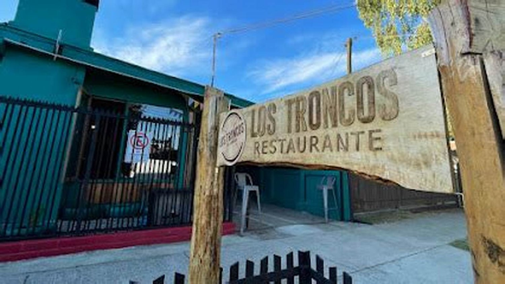
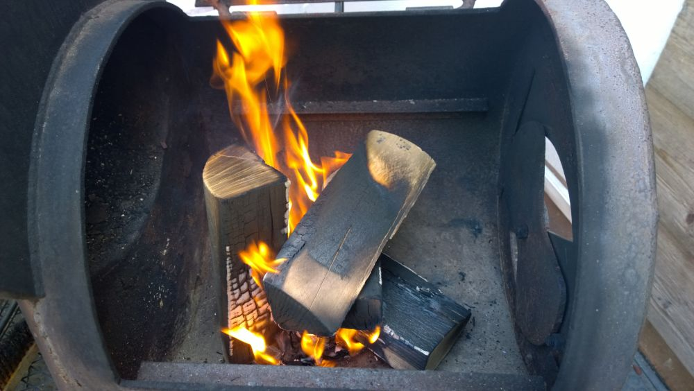
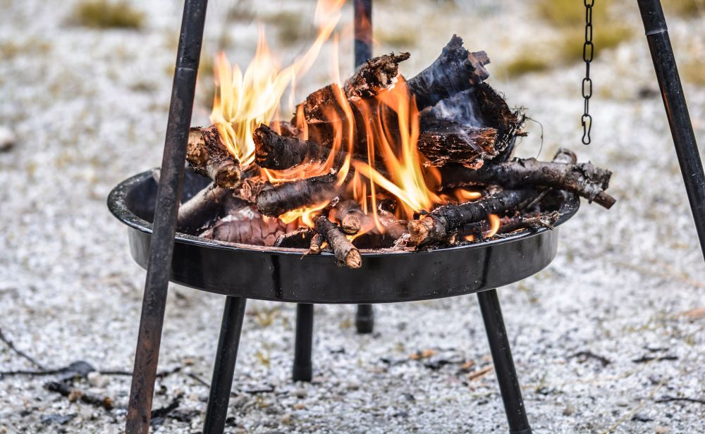
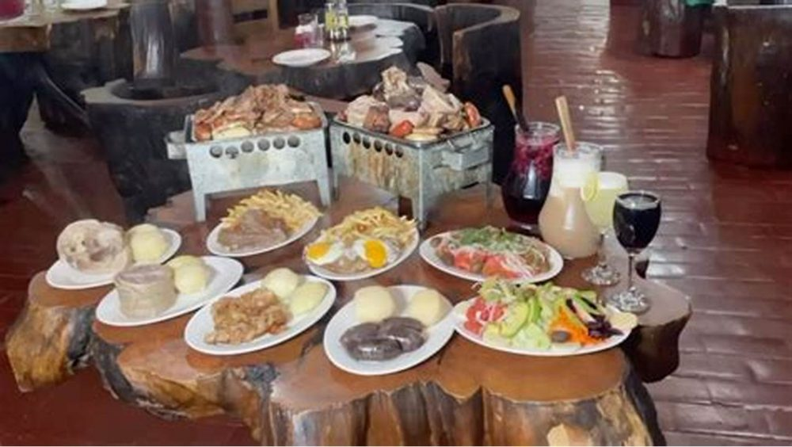
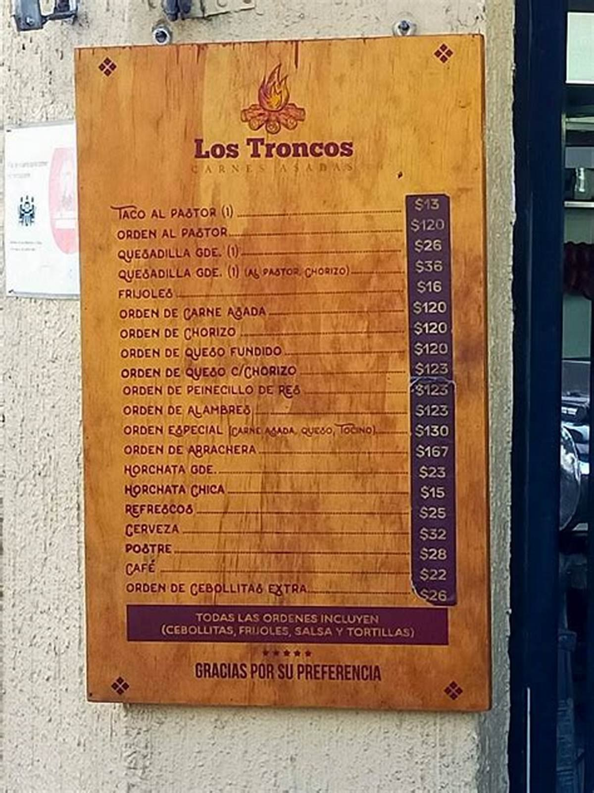
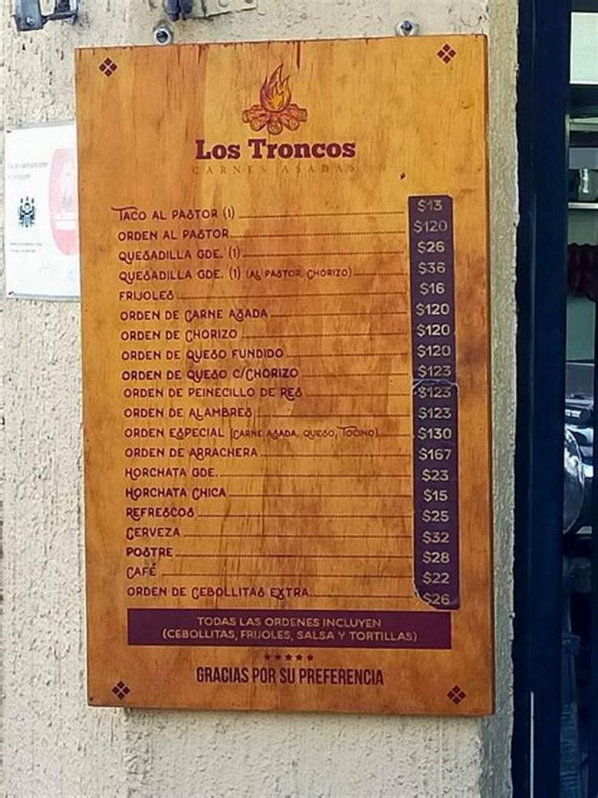
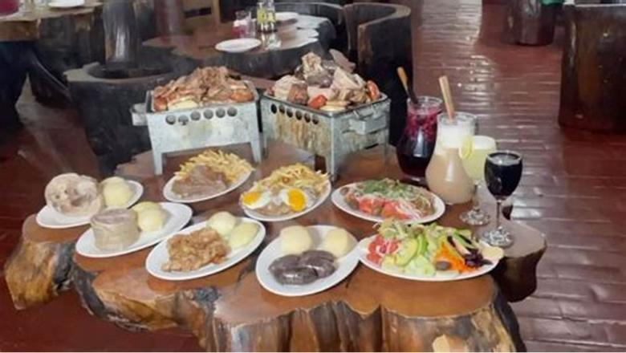
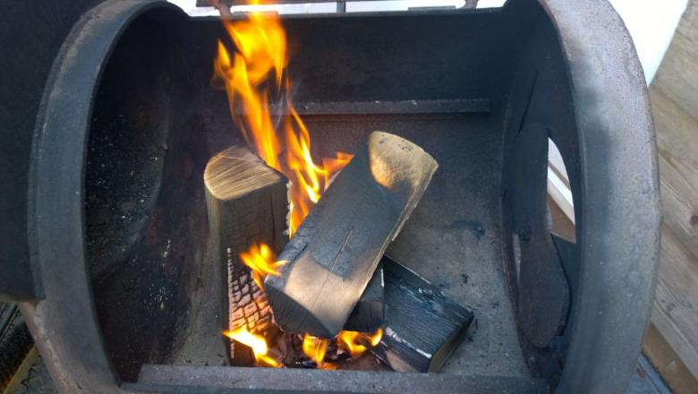
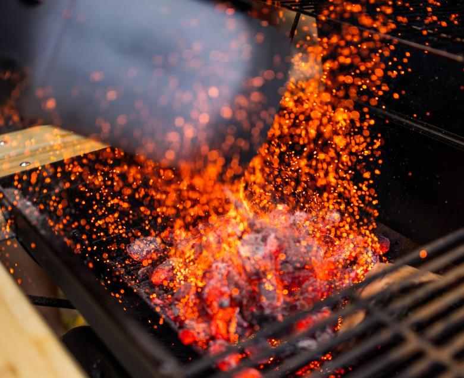

Para 2
- Dos cortes
- Un embutido
- Acompañamiento a elección
falta: precio
Propuesta de sitio web — preparada para Los Troncos por CristalWeb
289 reseñas con 4,8 y su única dirección en internet es una cuenta de redes que Google apenas muestra.
Parrilla · Villarrica
Pasa siempre, y casi nunca es culpa de la parrilla: es que cada uno entiende «a punto» distinto. Acá están los cuatro puntos, escritos.
Para pedir sin adivinar
La franja de color de cada fila es cómo se ve el corte por dentro al abrirlo. Los minutos son sobre el mismo corte: cada punto que sube, más tiempo al fuego.
Inglesa
Rojo vivo en todo el centro, jugoso, apenas tibio por dentro. El corte sella por fuera y adentro casi no cambia.
el más corto
A punto
Rosado en el centro, con los bordes ya cocidos. Suelta jugo rosado al cortar, no sangre. Es el que más se pide y el que más se malentiende.
+2 a 3 min
Tres cuartos
Apenas una línea rosada al centro. Firme al tacto, todavía con jugo. Para el que quiere carne cocida pero no seca.
+4 a 6 min
Cocida
Sin rosado, parejo de lado a lado. Pierde jugo, así que conviene pedirla en cortes con grasa: se sostienen mejor.
+7 min o más
Los minutos son referencia: dependen del grosor del corte y de cómo esté la brasa. Si no está seguro, pida a punto y avise que prefiere retirarla antes: siempre se puede devolver al fuego, nunca al revés.

La única foto suya que se puede verificar
«Los Troncos» es un nombre que se repite en medio Chile y medio Argentina: el buscador devuelve una parrilla en Villa Pehuenia, un almacén, un local en un mall. Ésta es la de acá, con su letrero tallado en un tablón y los postes de madera. Cuatro fotos más —la parrilla trabajando, el salón, dos cortes— y la página deja de depender de imágenes prestadas para hablar de carne.
La cuenta antes de entrar
La duda del grupo parado en la puerta: si pedimos una para cuatro, ¿alcanza para cinco? Escrito, se decide antes de sentarse.
Para 2
falta: precio
Para 4
falta: precio
Para la mesa larga
falta: precio
Armados de ejemplo para mostrar la forma. Lo que trae cada uno y cuánto vale lo pone la casa: un precio equivocado en internet molesta más que no publicarlo.
Diga cuántos son y cuándo: el mensaje se arma solo.
El punto se pide antes, no se reclama después
Y para pedirlo hay que saber cómo se llama



Dos fotos de esta página son suyas: el letrero y esta carta. Los fondos de brasas y el corte son de banco libre y están declarados en imagenes/FUENTES.txt.

falta: la parrilla trabajando, el salón, y dos cortes fotografiados de verdad
Estas seis ya aparecen más arriba en la página. Vuelven acá en otro tamaño porque una sola pasada de imágenes deja el scroll vacío, y porque de cerca se ven cosas que en grande se pierden. La procedencia de cada una está en imagenes/FUENTES.txt.




El 4,8 con 289 reseñas de su ficha de Google y que no tiene página ni teléfono publicado.
Los cuatro puntos son referencia general del oficio —la misma que ustedes manejan— y los armados de parrillada están puestos para mostrar la forma.
El número, la dirección, el horario y los precios. Y una foto de un corte abierto: es lo único que explica el punto mejor que las palabras.